### Conceptual take aways - interpretability helps you to: - trust a model to perform well - explain decisions and change outcomes - satisfy regulators that the model is safe and non-discriminatory - until recently it was hard to have a model that was both accurate and interpretable - LIME, a model-agnostic interpretability tool, allows you to construct explanations for each decision made by an arbitrary model - demo prototype ### Technical take aways - Reason for interpretability/accuracy trade-off - How white-box models increase accuracy while minimizing harm to interpretability - How LIME works --- class: center, middle, full-bleed <img src="img/0-01.png" width="40%"> ## Interpretability #### Friederike Schüür • <Friederike@cloudera.com> #### Cloudera Fast Forward Labs • [@fastforwardlabs](https://twitter.com/fastforwardlabs) • [fastforwardlabs.com](http://www.fastforwardlabs.com) ??? Welcome! Use the arrow keys to move forward and backward. Hit `p` on your keyboard to toggle the presenter notes on/off. --- class: center, middle, full-bleed <img alt="cover" src="img/ff01-cover.png" style="width:20%"><img alt="cover" src="img/ff02-cover.png" style="width:20%"><img alt="cover" src="img/ff03-cover.png" style="width:20%"><img alt="cover" src="img/ff04-cover.png" style="width:20%"> --- class: full-bleed, center, middle  ??? Fast Forward Labs builds product prototypes and writes reports about advances in machine intelligence. You might want to become a subscriber! Our most recent report is about machine learning interpretability. --- class: center middle  ??? Why now? Two reasons. One, algorithms are everywhere. They're in our own lives... --- class: center middle full-bleed 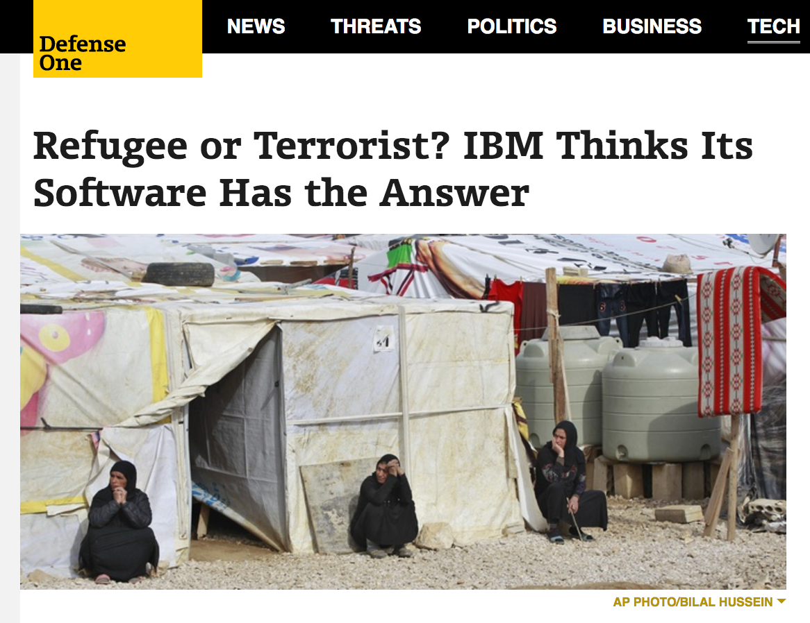 ??? And in increasingly high stakes situations. --- class: center middle full-bleed 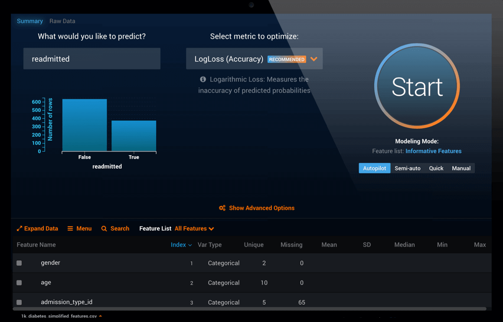 ??? Second, algorithms are increasingly uninterpretable. That's because automated machine learning like DataRobot is becoming more prevalent... --- class: center middle full-bleed 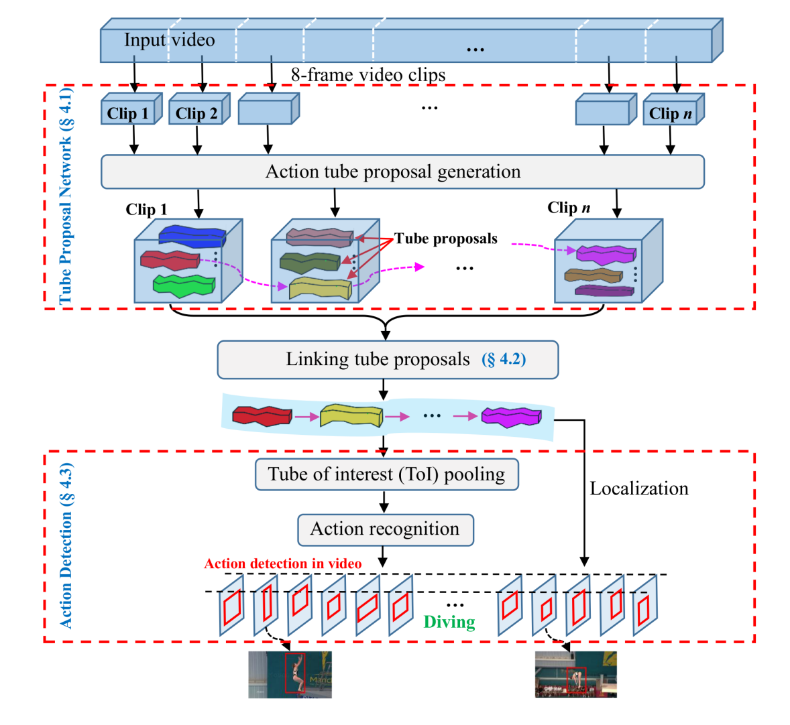 ??? ...and when ML is not automated, we're using deeper and more complex neural networks. We'll see exactly what makes these kinds of models uninterpretable later, but first let's talk about why interpretability is useful. --- class: center middle full-bleed 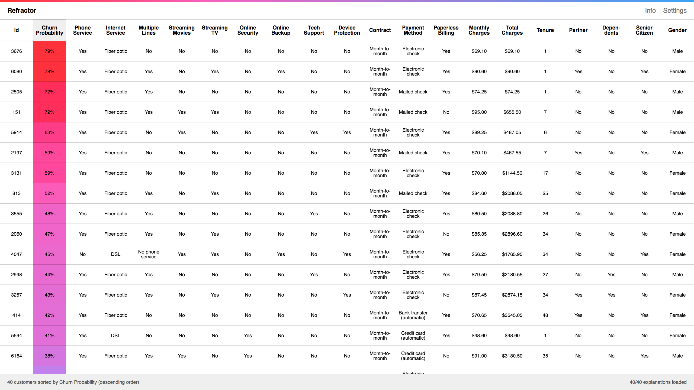 ??? Immediately illustrate with concrete example. This is a model of customer churn. It tells you how likely a customer is to leave a subscription business. That's very nice, but what's missing here is _model interpretability_. Let's define an interpretable model as one whose decisions you can explain. --- class: center middle full-bleed 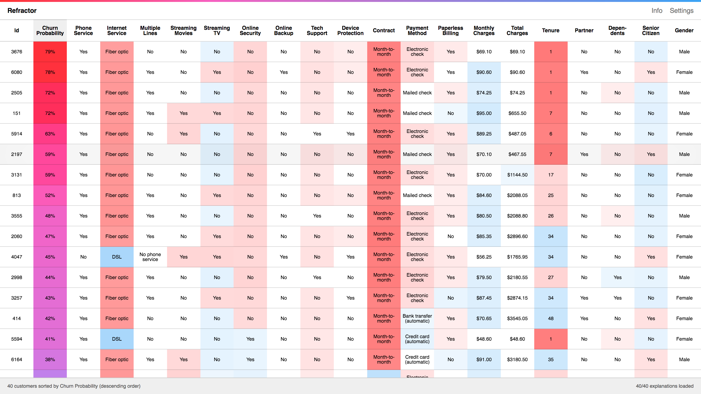 ??? We'd like to add "explanations" to this model, i.e. show the user which aspect of each customer is concerning. That raises the possibility of understanding "global" weaknesses in our business, or individual customer problems. --- class: center middle full-bleed 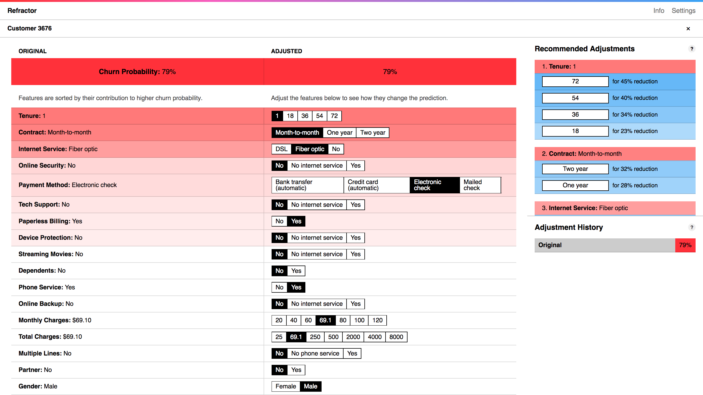 ??? And if you drill into individual customers... --- class: center middle full-bleed 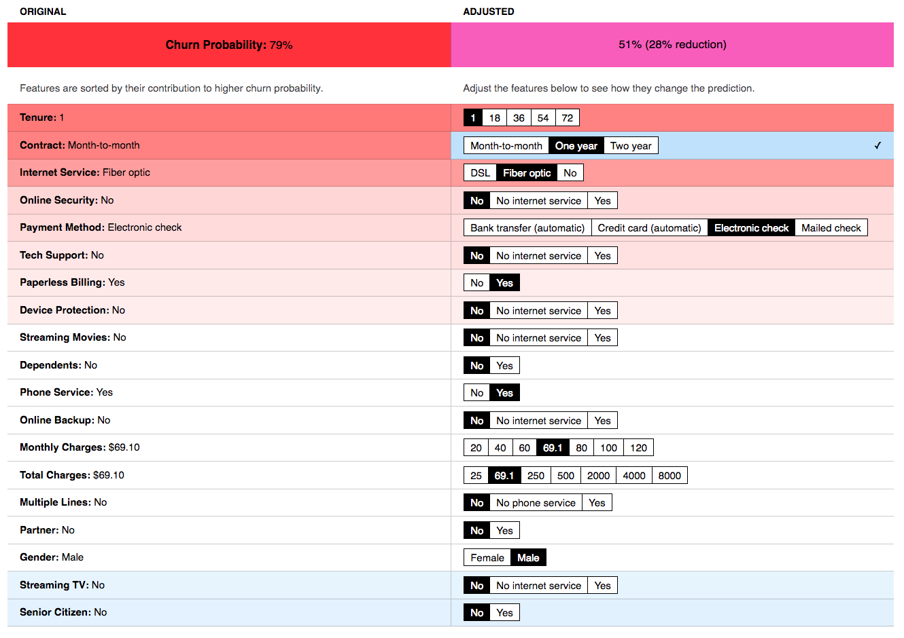 ??? You can try answering hypothetical questions to see how you would change outcomes. A model predicts the future. An _interpretable_ model can be used to change it. This is a real working prototype I'll talk more about later in the talk. --- # Interpretability An interpretable model is one whose decisions you can explain ??? But first let's drill down into the advantages of interpretability. You'll recognize some of these from your business. What do I mean by each of these? We've touched on customer churn. Let's illustrate these with some more concrete applications. -- , which allows you to ### 1. Trust the model will work -- ### 2. Explain decisions -- ### 3. Satisfy regulators and ethical concerns -- ### 4. Have a more collaborative relationship with AIs ??? --- class: center middle  ??? Trust. How do data scientists develop trust in their models? The usual process is validation. You hold back a fraction of your training data and use this to measure performance. The limitation of this is it doesn't help you answer the question "is my model right _for the right reasons_?" (and "is it wrong for the right reasons"). --- class: center middle  ??? But validation won't help if the training data isn't like the data in the real world. That can be obvious, or the problems can be more subtle. For example, if you train a model to predict pneumonia death on training data from a hospital, you will learn than patients with asthma are _less_ likely to die. This is of course wrong. The reason for the mistake is that asthma sufferers get quicker treatment when they have symptoms. --- class: center middle  ??? A misunderstanding like this would be lethal if the model were deployed. The only way you can catch it is if it's possible to understand and explain how the model works, i.e. if the model is interpretable. That allows experts to spot glaring problems like this that would otherwise go unnoticed. --- class: center middle  ??? Another very significant advantage of having a model you can interpret is that you can explain individual decisions. This raises the possibility we saw with our churn prototype. An accurate model that predicts which customers your business is about to lose is useful. But it’s much more useful if you can also see _why_ they are about to leave. In this way, you learn about weaknesses in your business, and can perhaps even intervene to prevent the losses. --- class: center middle full-bleed  ??? You can imagine doing similar things with anomaly detection: what precisely is it about an observation that makes it anomalous and alarming, and can we save time repairing it by knowing this in advance? --- class: center middle full-bleed  ??? Or product recommendation --- class: center middle full-bleed  ??? Or perhaps most famously: APGAR scores, which are used for triage in maternity wards. This might not seem like machine learning, but it's an algorithm. It's _extremely_ interpretable. You can calculate this score (which is implicitly a prediction of health outcomes in your head). That's important not because we are short of computers, but because it allows us to reason quickly and with confidence about how to _change_ the prediction. --- ## Regulations - Civil Rights Acts of 1964 and 1991 - Americans with Disabilities Act - Genetic Information Nondiscrimination Act - Equal Credit Opportunity Act - Fair Credit Reporting Act - Fair Housing Act - Federal Reserve SR 11-7 (Guidance on Model Risk Management) - European Union General Data Protection Regulation, Article 22 - ... ??? Our having trust in our own models, and having the ability to explain their individual decisions brings me nicely onto regulations. There's a fairly good chance one of these affects you, if you're deploying your model in a context where it makes you money. And if it doesn't, you should be thinking about the goals of these regulations, which is to prevent ethical harm. --- class: middle ### The consumer shall be provided all of the key factors that adversely affected the credit score of the consumer in the model used, the total number of which shall not exceed 4. — Section 609(f)(1) of the Fair Credit Reporting Act ??? Some of these regulations create an absolute requirement that you be able to explain individual decisions accurately and simply. This is a verbatim quote from a regulation that affects retail banks and lenders in the US. And of course some require that the model not discriminate. Demonstrating these is all but impossible if the model is uninterpretable. --- class: center middle full-bleed 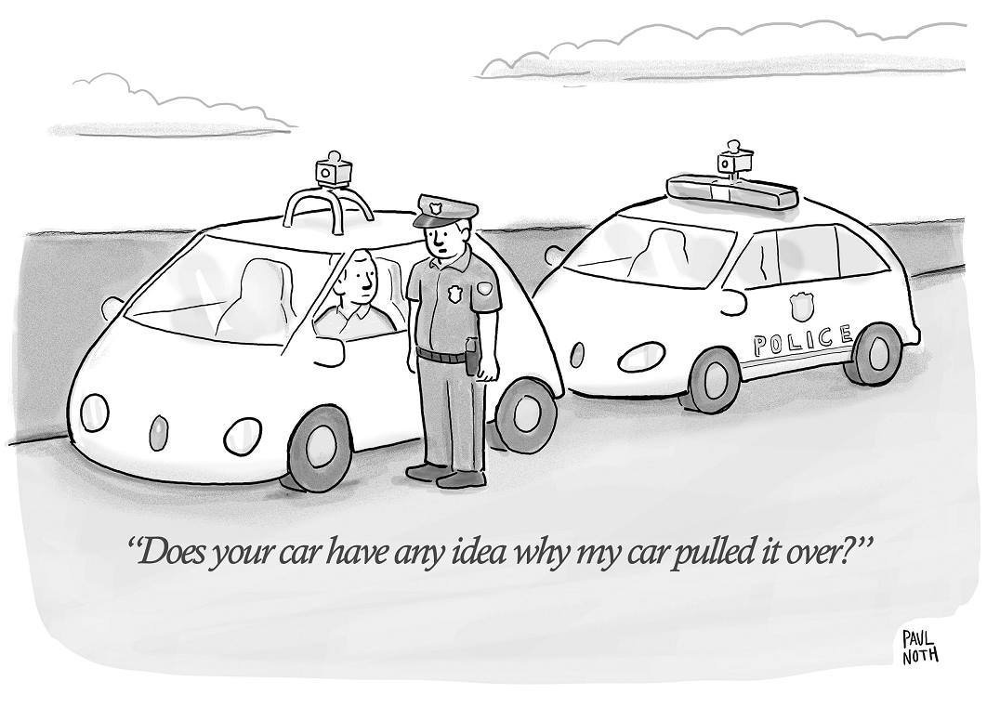 ??? Other regulations, and ethics, require that you demonstrate the model as a whole is safe, as in autonomous vehicles, or in trading models that could represent a risk to the economy (e.g. SR 11-7). This New Yorker cartoon also illustrates the dangers and bleakness of a future of "human _out_ of the loop" machine learning. Models we understand and can explain to each other allow for not just a safer and more trustworthy applications. They allow us to have a _collaborative_ relationship with artificial intelligences. --- class: center middle full-bleed  ??? So why don't we simply make all our models interpretable? Because there is a central tension in machine learning. Generally speaking, the more accurate a model is, the less interpretable. --- class: center middle full-bleed  ??? Our report was all about breaking out of this trade-off, but let's first talk about where it comes from. --- class: center middle full-bleed  ??? This is a very simple dataset of loans that were repaid or not repaid. It's possible to build a very accurate model by drawing a straight line and using as your criteria: is the loan applicant above or below the line. The model is linear, and the data is linearly separable. --- class: center middle full-bleed  ??? So this is out model. And along comes an applicant. The fact that the model is linear makes it very easy to explain our decision, which satisfies regulators and is good for the customer. --- class: center middle full-bleed  ??? But what about a dataset that cannot be modeled in this way. This is data describing areas of high and low yield in a farm. --- class: center middle full-bleed <img src="img/2-19.png" width="40%"> ??? One way of modeling this is with an SVM. You can think of that as adding a third dimension to two dimensional data. We're free to choose how the third dimension works. We want to move things around so that it's possible again to separate the data not with a straight line, but with a plane. That's what we've done here. --- class: center middle full-bleed  ??? And the model works well. But there's a cost to this accuracy. The problem is, it's no longer quite as simple to explain a decision in terms solely of the input features (in this case latitude and longitude). --- class: center middle full-bleed  ??? That's kind of a silly example though, so let's look at a much more complicated model. Quite often, a classification boundary like this will be what you need to get good accuracy. This boundary can be found by something like a random forest or a neural network. Generally speaking, the more complicated the boundary a model is able to draw, the more accurate it will be. Such models deal with individuals rather than crude stereotypes of the data. This complicated boundary is not the problem per se. It's that, in the case of these more complex models, we don't actually know where the boundary is. We can't "see" the boundary. Which makes it _very_ difficult to explain why a point is classified the way it is. --- ## Options to increase interpretability <img src="img/3-10.png" width="50%">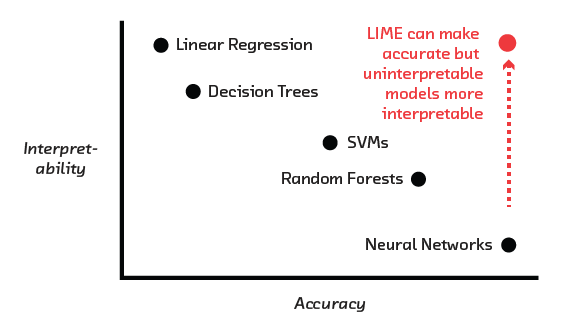 ??? So there's this tension between accuracy and interpretability. Pick one. We'd like to be in the top right corner, for which we have two options. The first involves given a simple model (like a linear model) a tiny bit more freedom. This potentially allows it to describe more complicated boundaries, but to do so we insist that it chooses from a short menu of options, all of which we understand. --- # Model-agnostic interpretability ??? But what if approaches like that aren't accurate enough. Or what if you have a model you already like and you don't want to change it. Or what if you don't have the model. You only have an API you can ask questions. In that case you need a way of interpreting or explaing the behaviour of a model that is a black box to you. This method needs to be model angostic. -- ## Global vs local ??? There are two possible approaches. One is to be build tool that offers _global_ explanations, by which I mean explanations of the model as as a whole. The alternative is _local_, i.e. a tool that can be applied on a per-example basis to explain individual decisions. --- ## Shadow models as global explanations .center[] ??? So here's how you might construct a global description. You've got a complicated model, perhaps one you can't see. You need a simple description of it's global behaviour: a caricature or "shadow" model. You make this by using the original model to generate large amounts of fake training data for a simple (perhaps linear or decision tree) model. You can then offer explanations of the original behaviour by explaining the simple model and assuming it's a reasonable approximation to the origingal model. The problem is, in general have no idea if this assumption is justified. In the same way that if all you can see is shadows on the cave wall, you're not sure what the object looks like. --- ## Perturbation for local explanations .center[] ??? The problem is the original model is complicated (or inside a black box). Any global description is reductive. The right approach is instead to construct _local_ explanations. These don't necessarily explain the entire model, but they can be _locally_ correct, i.e. they explain an individual decision. You can do this using _perturbation_. If I asked you to figure out what's going on in a black box this is probably exactly what you'd do. You put in an example, you get out a prediction, and then you change one thing at a time, or you change several things by small amounts. This probing strategy, which is sometimes called perturbation, will not give you a full picture of the global behaviour of the model. But it will give you a _local_ picture that is a correct explanation for the behaviour of the model in the vicinity of the original example. --- class: center middle full-bleed  ??? If you have an account on Credit Karma you can do this by hand. They don't tell you how they calculate your credit score, but they allow you to simulate the effect of various changes. This is a mnaual process (there are ~20 features), and it's a case of trial and error to find the most effective thing (or combination of things, since credit score is non-linear) you can do to to increase your score. --- ## LIME - Local Interpretable Model-agnostic Explanations - Automates perturbation to get local explanations ```python from lime.lime_tabular import LimeTabularExplainer explainer = LimeTabularExplainer(training_data=X, training_labels=y, feature_names=feature_names, class_names=class_names) e = explainer.explain_instance(example, clf.predict_proba) print(e.as_list()) ``` See our recent blog post http://blog.fastforwardlabs.com/2017/09/01/LIME-for-couples.html and https://github.com/fastforwardlabs/couples-lime/blob/master/couples-lime.ipynb for an example. ??? Which is where LIME comes in. LIME essentially automates this process, given a black box. It's the technology we built our prototype with. How does it work? In the Python code example there, `clf` is your classifier. As you can see, it doesn't take a lot of code to apply to an existing model. **Technical note**: This needs to be a function that takes raw features as input, and spits out a classification. The explanations LIME offers will be in terms of those features, so if they're preprocessed then LIME's output may not be interpretable (e.g. if they are an embedding). --- class: center middle full-bleed  --- class: center middle full-bleed  --- class: center middle full-bleed  --- class: center middle full-bleed  --- class: center middle full-bleed ??? With that understanding, let's look again at the prototype I showed you at the start. This is what we have without LIME. **Technical note**: for anyone who askes, it's a voting classifier made up of a linear model, and random forest and a neural network, i.e. highly non-linear, pretty accurate. --- class: center middle full-bleed ??? It's the output of LIME that is providing the colour here. Redder indicates features whose values LIME tells us are contributing an increase in prediction. Blue indicates features that contribute a reduction. That raises the possibility of understanding "global" weaknesses in our business, or individual customer problems. There's some simple, globally-true observations we can make here, e.g. the longer you've been a customer, the longer you will stay a customer. **Technical note**: this is the _Lindy Effect_, well known in survival analysis: what's been around the longest is likely to remain around the longest. Or people who pay more are likely to remain (presumably they like our service enough to pay more). Or perhaps less obviously: people with a DSL connection are relatively happy compared to people with fiber optic. Perhaps we should look at our connection reliability? --- class: center middle full-bleed ??? But perhaps more inte drill into individual customers... --- class: center middle full-bleed ??? **Note**: If you're doing a live demo here, you can demonstrate that the model (and the explanations are non-linear) by looking at the effect of increasing price on customers at high risk of churn and low risk. High risk customers become lower risk if you increase the price. Low risk customers become higher risk. Whether this makes sense (causally) is a question for the model (and training data), but it's how the model behaves, and something that would be extremely hard to spot without LIME. **Note**: For a technical audience you may want to get into the question of whether it makes sense to think of a variable like tenure as one you have control over for individual customers. In certain kinds of analysis (e.g. what are my weaknesses) probably, but in others (e.g. how do I keep this customer) probably not. --- class: center middle full-bleed 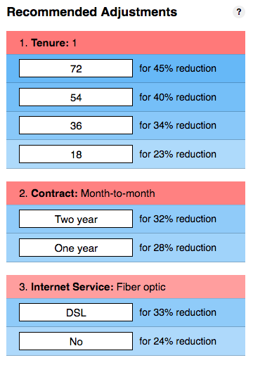 --- class: center middle full-bleed  ??? For LIME to be truly model-agnostic, it has to be applicable to unstructured, non-tabular date. Here's a great example of its application to images. LIME knows how to "remove" "super-pixels", i.e. semantically meaningful units of an image. It sets these to mid-gray and cycles through them to figure out which bits of an image are together responsible for the classification. --- class: center middle full-bleed  ??? This can be used to "debug" apparently very accurate models. In validation this model could tell the difference between wolves and huskies with extremely high accuracy. But the application of LIME showed that the model was in fact using snow in the background to do it. It was "right for the wrong reasons". --- class: center middle full-bleed  ??? Or you can do similar things with highly complex RNN/embedding classification models of text. The "perturbation" here is the removal of words. That allows LIME to tell you which words are "responsible" for a classification. --- class: center middle full-bleed ## Why your relationship is likely to last (or not)? <img src="img/henry_viii.jpg" width="60%" /> http://blog.fastforwardlabs.com/2017/09/01/LIME-for-couples.html --- class: center middle full-bleed <img src="img/lime_3-1504282789410.png" width="80%" /> ??? This couple is likely to stay together, the model gives it a 0.89 probability. LIME informs us that the prediction is due to the fact that the couple is married while their (young) age lowers their chances of relationship “success”. --- class: center middle full-bleed <img src="img/lime_13-1504299937445.png" width="80%" /> ??? This couple is likely to stay together, the model gives it a 0.75 probability. LIME informs us the prediction is due to the fact that the couple owns their home, they are matched in terms of the level of education, and the respondent is between 43 and 55 years. Curiously, living in an urban area and voting democrat is associated with a lower chance to staying together. --- class: center middle full-bleed <img src="img/pre_marriage_lime-1504283413457.png" width="80%" /> ??? Your chances of staying together aren’t bad, the model gives is a 0.79. But merely “living together” is hurting your chances, according to LIME. --- class: center middle full-bleed <img src="img/post_marriage_lime-1504283506173.png" width="80%" /> ??? Getting married increases your chance of staying together to 0.91. But, reasons are not causes. We advice against marrying tonight’s Tinder date. --- ## The future - Application of black box models in regulated industries - Natural language explanations - Adversarial application of tools like LIME by regulators/competitors - A more collaborative relationship between machines and humans --- Thank you! --- --- class: split-50 ## GAMs/GA2Ms Instead of a linear model `Ax + By + Cz` .column[ `⇒ f(x) + g(y) + h(z)` <img src="img/3-02.png"> ] -- .column[ `⇒ f(x) + g(y) + h(z) + p(x, y) + q(y, z)` 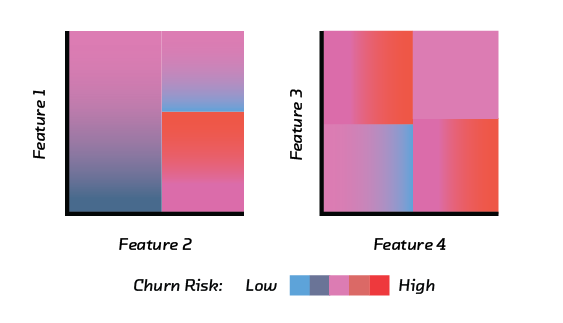 ] ??? **Generalized Additive Models** GAMs are a good example of this. A linear model is changed in one of the following ways. This potentially makes it much more accurate, but the changes are chosen such that they allow us to plot "partial dependence plots". The ability to visualize the effect of each feature on the model allows us to explain their role. --- ## SLIMs **Supersparse Linear Integer Models** A linear model `Ax + By + Cz` where `A`, `B` and `C` are constrained to be integers .center[] ??? In SLIMs (supersparse linear integer models) we require the coefficients of the linear model to be integers. This makes it relatively easy to reason about. Not only can you potentially calculate the prediction with mental arithmetic. You can also reason about the effects of changing a feature quickly. This is very similar to the simple scoring systems used in healthcare, such as APGAR scores. We could build a neural network that is perhaps a few percent more accurate, but that would not only be difficult to trust. It wouldn't be useful in a clinical setting because we can't reason about it quickly. --- ## Rule lists .center[] ??? Rule Lists are even simpler. If you've seen decision trees, they are decision trees constrained to be one-sided. If you program, they are nothing more than if-then-else statements. They encode a kind of rapid triage. The difficult bit here is _finding_ the rules; an area of active research.